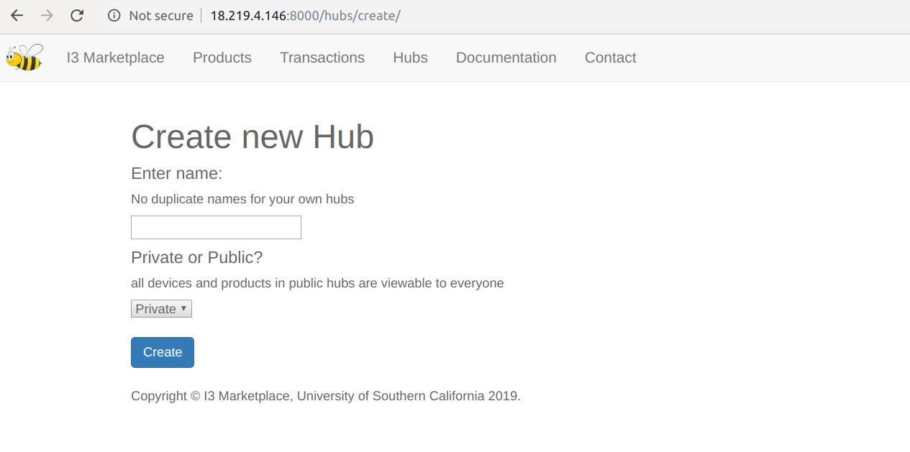
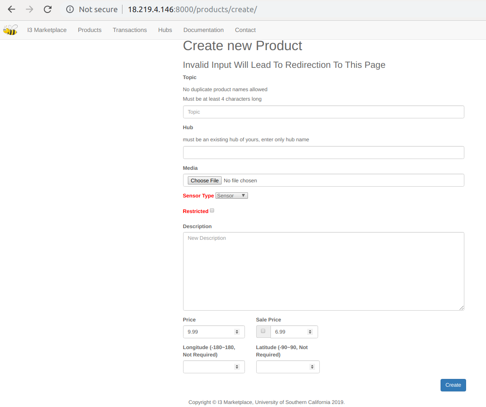
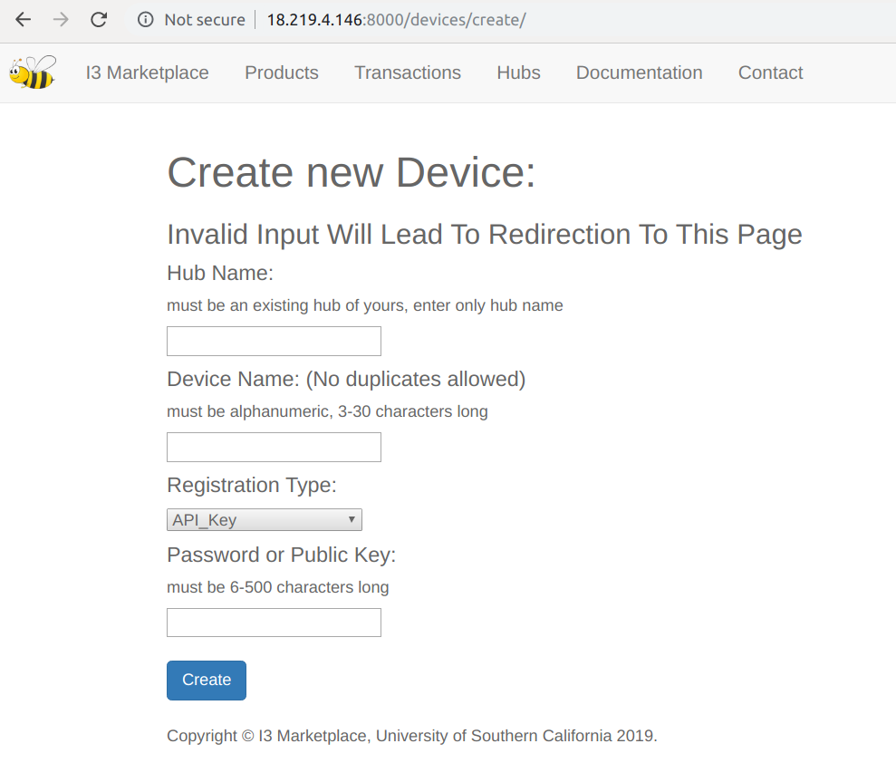

Seller's Guide¶
Hub¶
Products and devices should be registered under a certain hub, so the first thing you should do is to create a hub. Navigate to the hub page on the upper panel, you’ll see a list of your current hubs. Click “create hub” to create a hub. The private/public is a hub attribute, if you want others to be able to view the details of your hub (devices and topics under it), choose public. Otherwise choose private. By default, in the same hub, all devices have permission to publish to all topics. No publish permissions across hubs. In the future, you’ll be able to assign fine-grained publish permissions for each device (maybe to topics outside its hub), but of course, still restricted to your own products.
The detail view of a hub is accessed by /hubs/{HUB_PRIMARY_KEY}, but for hub creators, buttons will be provided for them to see their hub details (see blue hub name, which is a link). When you try accessing the detailed view of a hub (by primary key), your permission will be checked. If you created this hub, you’ll see a page like this (left private, right public).
You can use the buttons to create or delete devices, and create or delete or edit products.
When you’re not the hub creator, if you try to access a private hub detail view, you see this
If you try to access the detail view of a public hub, you see this
Almost the same as the view page of that of a hub creator, but there’s no buttons provided for you because you’re viewing someone else’s hub, so you can’t do things like delete etc. Of course, buttons are just a visible access to URLS, so what if someone tries to delete a device or product that doesn’t belong to him by entering URLs?
He’ll see this.
Only creator gets to make changes to hubs, products and devices. NOTE: as of today, the product edit view doesn’t have permission control yet, so anybody can edit any product by using the edit URL.
Invalid Form¶
If there’s anything invalid in your create form, you’ll be redirected to the same create page without further notice. Please read the instructions carefully, such as “no duplicate product names” and “name must be at least 4 digits”.
Naming¶
When registering, just provide an alpha-numeric name for your hub (also a requirement for products and devices), and the final hub name will be automatically tagged as {USER_NAME}/{HUB_NAME}. NOTE, no duplicate hub names for a single user is allowed. If you registered a hub1, and did it again, you will be automatically redirected to the hub_create view page without extra prompt, and no operation will be performed on the system (as is mentioned above).
Product Create¶
Products have to be created inside a hub, and a create button is provided inside hub detail view, and also in the dashboard. They both point to the same URL /products/create.
When creating a product, no duplicate product names inside a hub will be allowed, and the hub name has to be an existing one (eg, for usr1/hub1, don’t write usr1/hub1, write only hub1. This is to prevent usr2 from registering a hub that starts with usr1/. Same for devices and products). If these conditions are not met, you will be redirected to the product create page without further prompt. When creating a product, the final product name is automatically tagged as {USER_NAME}/{HUB_NAME}/{PRODUCT_NAME}. This is to make sure that all product names are unique and structured. Detail_view of all products are accessible to all users (login-required), they can be accessed from either marketplace or product link, or /products/{PRIMARY_KEY} (such as /products/1/) or /products/ {PRODUCT_SLUG} (such as /products/usr11hub1topic1/). Also, you can provide an optional location for your product so that it’s easier for the buyers to check it out.
Sensor Type¶
Sensor’ means buyer only gets to subscribe to the topic, ‘actuator/both’ means buyer can also publish to this topic. Depends on whether you want the buyer to have publishing permission to your topic.
Restricted Product¶
If this box is checked, anyone who bought this product will prompt you a notification and a request, and you can choose to approve or decline. Buyer will get the feedback as notification. Approve/decline is using ajax, and when approved, buyer’s name will be put into acls table for authorization.
Buyer of a restricted product sees this
Deleting a Device or Product¶
When seller deletes a device, only himself is notified; but when he deletes a product (which is NOT supposed to be the usual circumstance), all buyers of this product are notified. Of course, all buyers lose access to this topic, but their personal buying credential remain unchanged. As I’ve mentioned before, it’s specific to buyers, not products.
Device Registration¶
Devices are registered under hubs, and also require valid input when creating. Invalid input will redirect you to the device create page without further prompt. Device names are auto tagged as {USER_NAME}${HUB_NAME}${DEVICE_NAME}. ‘$’ is used as a separator, instead if ‘/’, because ‘/’ is considered dangerous username in mqtt authentication check, and ‘/’ is necessary for mqtt topic authorization wildcard matching.
Two methods to register devices: api key and asymmetric key pairs. For the former, enter a password for your device, and it will be np-hashed in database. For the latter, generate a RS key pair using openssl, open the public key file, and get rid of all characters that are not the key body (including ‘n’s and “---BEGIN PUBLIC KEY---” and “---END PUBLIC KEY---”), and copy it to i3. Sellers have no credentials for themselves (unless they buy products and act as buyers), but they create credentials for each of their registered devices (which is the password or public key he enters).